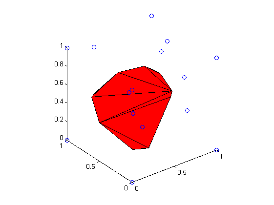
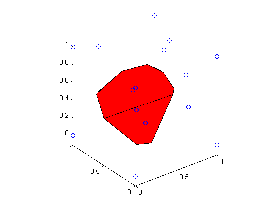

Contents
function demoVoronoiCell(varargin)
%DEMOVORONOICELL Compute and display voronoi polyhedron using geom3d library % % This demo show how to manipulate polyhedra, using matlab's voronoin % function and the geom3d library. % % This demo generate some points in a unit cube, computes the 3D voronoi % diagram from the germs, and isolate the central cell. % This cell is a bounded polyhedron, with polygonal faces. For a better % representation of the polyhedron, coplanar faces are merged and a new % polyhedron is created and displayed. % % Usage % demoVoronoiCell % % See also % voronoin, delaunayn, convhulln % meshReduce, drawPolyhedron % % % ------ % Author: David Legland % e-mail: david.legland@grignon.inra.fr % Created: 2009-06-22, using Matlab 7.7.0.471 (R2008b) % Copyright 2009 INRA - Cepia Software Platform.
Creation of germs
% germ of the cell of interest, in the center of the unit cube germ0 = [.5 .5 .5]; % create random germs, and add corners of unit cube to ensure finiteness of % voronoi pattern [corners faces] = createCube; %#ok<NASGU> germs = [germ0;rand(10, 3);corners]; % dispay the germs figure(1); clf; hold on; drawPoint3d(germs); % graphical settings view(3); axis equal;

Display Voronoi polyhedron associated with germ
% compute voronoi diagram in 3D using Matlab standard function [V C] = voronoin(germs); % the polyhedron corresponding to first germ is given by vertices in C{1} indVert = C{1}; vertices = V(indVert, :); % triangular faces can be obtained from convhulln K = convhulln(vertices); % draw the polyhedron drawMesh(vertices, K);
Compute and display minimal polyhedron
% merge some faces to reduce total number of faces. % new faces are 3D polygons % K2 is a cell array, each cell containing a row vector with indices of % 'points' corresponding to vertices of each face. [V2 F2] = mergeCoplanarFaces(vertices, K); % display the germs figure(2); clf; hold on; set(gcf, 'renderer', 'opengl'); drawPoint3d(germs); % draw the polyhedron drawMesh(V2, F2); % graphical settings view(3); axis equal;